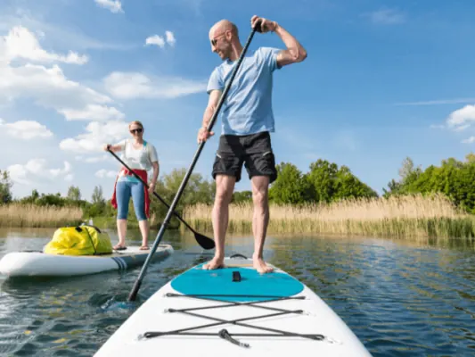
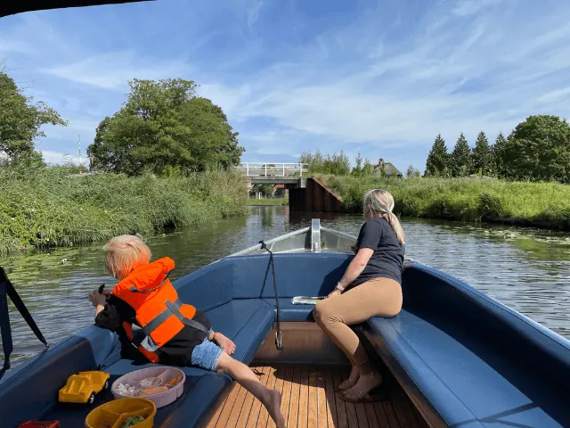
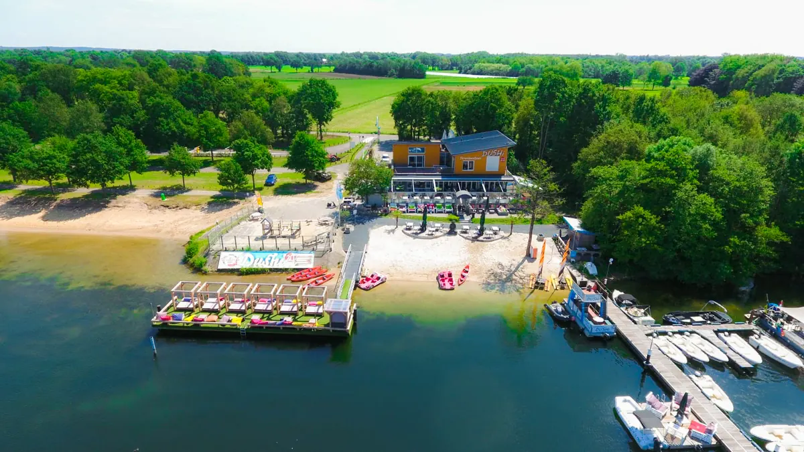

Over het water Nijmegen verkennen? Zo doe je dat!
Gepubliceerd op 2 december 2022, bijgewerkt op 20 februari 2024

Of je nu met het gezin een dagje het water op gaat, een (bedrijfs)uitje zou willen organiseren of ermee op vakantie gaan. Er zijn diverse manieren om het water te trotseren in Nijmegen. Denk hierbij aan een sloep, suppen, een jacht, een partyboot of een cruiser. Wij zijn het diepe in gesprongen en zijn tot de volgende uitkomst gekomen.
Suppen in Nijmegen
Suppen oftewel Standup paddeling is een activiteit die er sinds een paar jaar helemaal hot and happening is. Suppen doe je met een paddle en een supboard. Je staat op het supboard en gebruikt de paddel om je voort te bewegen. Het is in 2 minuten te leren en doordat de supboards breder zijn dan een surfboard zal je het heel bont moeten maken om om te vallen. Supper is hiermee een activiteit die voorziet in zowel actie als ontspanning. Als je viervoeter het aandurft kan je deze ook meenemen tijdens je suptour.
Waar een traditionele surfboard uit één massief stuk bestaat zijn de meeste supboards opblaasbaar. Met een pomp blaas je het bord binnen een paar minuten op en je kan aan de slag. Hiermee neemt het niet veel ruimte in beslag en zou je een supboard in een fietstas mee kunnen nemen. Je kan voor pak ‘m beet €350 euro een complete set kopen of je huurt deze vanaf €15 euro bij een bedrijf zoals Sup & Surf.
Suppen is er voor jong en oud en je kan het zo gek maken als je zelf wilt. Uiteraard moet je wel in het bezit zijn van een zwemdiploma.
Kanovaren in Nijmegen
In en rondom Nijmegen kan je heerlijk kanovaren. Dit kan in een traditionele kano of in een kajak of Canadese kano. Alleen of met zijn tweeën op pad door de prachtige omgeving. Bij verschillende bedrijven kan je heerlijk met de kano op pad over de Linge en de prijzen beginnen bij €17,50

Bootje huren in Nijmegen
Gezellig op pad met je gezin, je vrienden of je partner? Huur dan eens een bootje in Nijmegen. Verken de stad of de omgeving via het water en gezien van de prachtige omgeving. Tip is om bij warm weer zeker zonnebrand mee te nemen, je zwembroek of zwempak en eten en drinken. Niets is zo lekker als een koud biertje of wijntje drinken terwijl je lekker aan het dobberen bent. Je waant je echt op vakantie wanneer je een dag op het water vertoeft. Ben je op zoek naar een bootverhuurder? Kijk dan eens bij Strandpaviljoen Dushi aan de plasmolen. Hun verhuren diverse boten.

Met een grote groep op het water
Wil je iets organiseren voor een grote groep? Denk dan eens aan de pannenkoekenboot Nijmegen! Op deze boot kan je tot 150 personen het water op. Naast pannenkoeken kan je ook andere etenswaren nuttigen zoals gebak, borrelhapjes, lunch of een uitgebreid buffet.
Voor wie is dit interessant:
- Familie-uitje
- Groepsuitje
- Bedrijfsuitje
- Personeelsuitje
- Kinderfeestje
- Studentenuitje
- Vrijgezellenfeest
Vakantie vieren op het water
Vind je een dag(deel) te kort en ga je liever langer het water op dan kan je altijd nog een jacht of cruiser huren voor één, twee of meerdere weken. Bij bedrijven zoals HM Yachtrental kan je diverse grote en kleine boten huren waar je je prima een week kan vertoeven. Boten van 12 meter die geschikt zijn voor 6 personen zijn geen uitzonderingen bij dit bedrijf.
Toch liever droge voeten?
Ben je helemaal into spelletjes, vindt je het leuk om te ontsnappen en heb je al vele escaperooms succesvol weten op te lossen? Kijk dan eens bij Escape Boot Nijmegen. Hun bieden een aantal escaperooms aan op hun boot in het centrum van Nijmegen. Kan jij alle kamers oplossen?